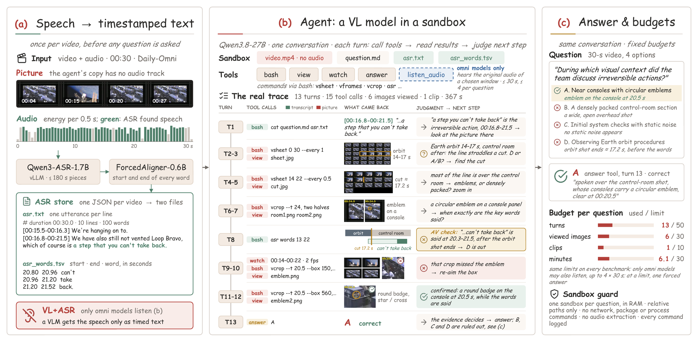
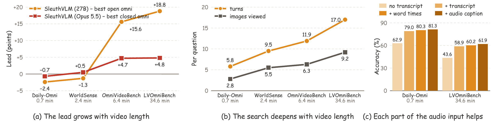
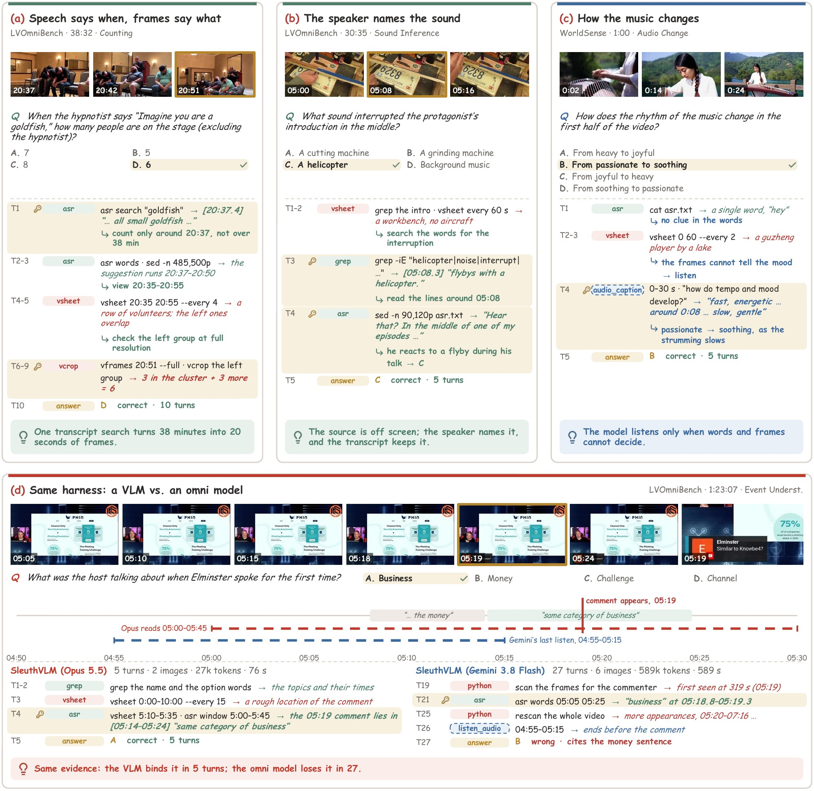
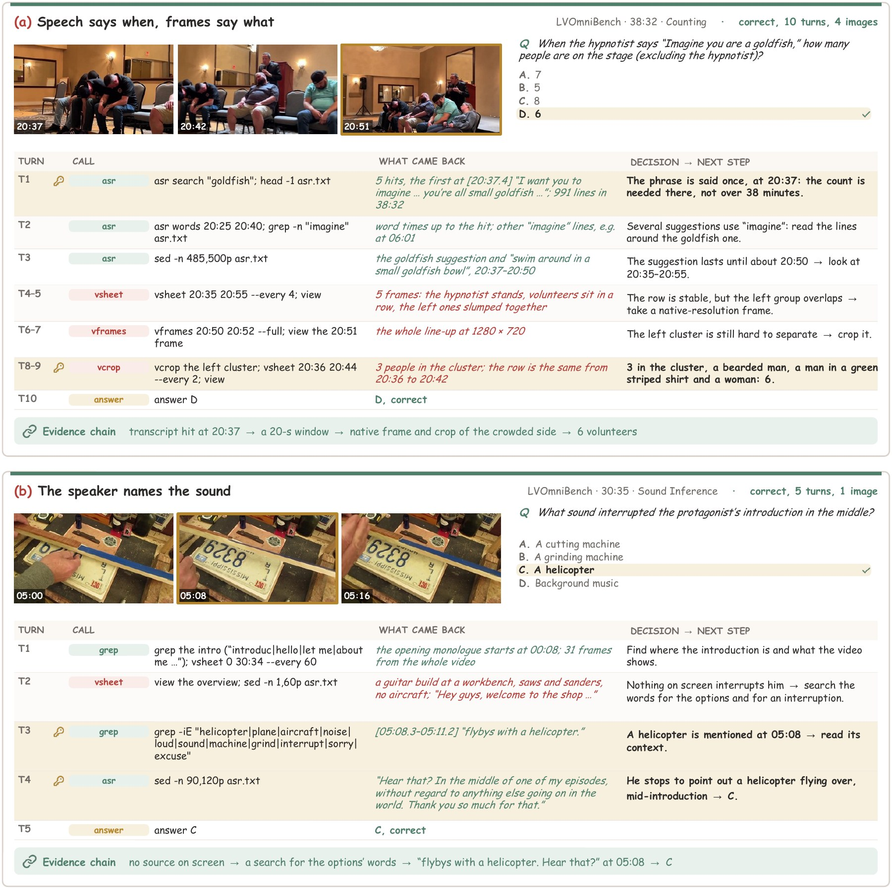

1
Searching outperforms passive observation.
Agentic inference improves accuracy by up to 10.3 points, and our simple harness outperforms agents equipped with specialized tools.
1University of Bristol 2Ant Group 3Tsinghua University
†Corresponding author
Drag or swipe left and right, or use the arrows.
Omni models answer questions about videos by jointly processing sampled frames and audio in one turn, while VLMs have become strong agents that can search a video over many turns. We ask how far a model can go without hearing the audio, and present SleuthVLM, a simple multi-turn harness built on such a VLM that never hears the audio directly: speech is transcribed into text, and the VLM sleuths the video without a predefined workflow. On four omni benchmarks with videos up to 90 minutes, SleuthVLM achieves the best average accuracy: 75.0%, 2.6 points above Gemini 3.8 Flash, and it tops the Video-MME-v2 leaderboard with 77.8%; with Qwen3.8-27B, it is comparable to open-source omni models on short videos and better on long ones. We draw three insights: searching outperforms passive observation; agentic ability matters as much as direct audio access; and small agentic models are highly competitive. So we provide a simple but effective starting point for omni video understanding.
Agentic inference improves accuracy by up to 10.3 points, and our simple harness outperforms agents equipped with specialized tools.
Opus 5.5, reading transcripts alone, is the strongest reasoning model in our harness, ahead of omni models that can also listen, and agentic ability lifts omni models as well.
An open 27B VLM running on a single GPU matches the performance of closed-source omni models.
Taken together, SleuthVLM provides a simple yet effective starting point for agentic omni video understanding.
Building on the agentic ability of frontier VLMs, SleuthVLM answers audio-visual questions with a vision-language model that never hears the audio directly. The audio is transcribed once per video with word-level timestamps, and the VLM uses a small set of tools to search the video and the transcript. The harness specifies only the accessible resources, a brief agentic guide and a budget; the VLM decides where to look, how closely to inspect and when to stop, using the transcript as an index into long videos.

Qwen3-ASR-1.7B transcribes the speech and Qwen3-ForcedAligner-0.6B gives every word its start and end time. Stretches without words are kept as gaps, which point to music and other sounds.
In a sandbox with the muted video and the transcript, the VLM searches the words, looks at contact sheets, zooms into frames and crops, and watches short clips.
asrvsheetvframesvcropwatchview
The model stops as soon as the evidence settles the question, within a fixed budget of turns, images, clips and time. Any VLM can serve as the reasoning model without changes.
Without hearing the audio, SleuthVLM (Opus 5.5) achieves the best average accuracy on four omni benchmarks, 75.0%, above all closed-source omni models. Without any training, SleuthVLM (Qwen3.8-27B) is comparable to open-source omni models trained on large amounts of data: OmniVideo-R1 post-trains Qwen3-Omni-30B-A3B with RL on 101K samples using 128 GPUs, yet SleuthVLM stays within 2.4 points on Daily-Omni and WorldSense and leads by 15.6 points on OmniVideoBench. Its lead grows with the length of the video, reaching 18.8 points on LVOmniBench.
| Model | Input | Daily-Omni | WorldSense | OmniVideoBench | LVOmniBench | Avg. |
|---|---|---|---|---|---|---|
| Closed-source omni models | ||||||
| Gemini 3.8 Flash | A+V | 84.0 | 69.6 | 65.2 | 70.7 | 72.4 |
| Qwen3.8-Omni-Flash | A+V | 85.1 | 68.5 | 63.4 | 63.3 | 70.1 |
| Qwen3.5-Omni-Plus | A+V | 85.1 | 63.9 | 53.8 | 53.2 | 64.0 |
| Seed 2.0 Lite | A+V | 81.4 | 67.3 | 58.5 | – | – |
| Open-source omni models | ||||||
| Realtime-Venus-Omni | A+V | 81.3 | 54.0 | 39.2 | 38.9 | 53.4 |
| MiniCPM-o 4.5 | A+V | 80.2 | 55.7 | 41.1 | 34.8 | 53.0 |
| Qwen3-Omni-30B-A3B | A+V | 71.9 | 54.0 | 38.4 | 35.8 | 50.0 |
| OmniVideo-R1 | A+V | 82.8 | 65.8 | 44.8 | – | – |
| video-SALMONN-R3 | A+V | 78.7 | – | 43.9 | 42.9 | – |
| LongCat-Flash-Omni | A+V | 82.4 | 60.9 | – | – | – |
| video-SALMONN 2+ (72B) | A+V | 79.4 | 56.5 | – | – | – |
| Nemotron 3 Nano Omni | A+V | 74.5 | 55.2 | – | – | – |
| Omni agents | ||||||
| OmniReasoner | A+V | 64.2 | 46.7 | 34.8 | 35.4 | 45.3 |
| OmniAgent (o3 + Gemini + Qwen) | A+V | 82.7 | 61.2 | 59.1 | – | – |
| OmniAgent (7B) | A+V | 64.8 | 47.2 | 37.1 | – | – |
| Qwen3.8-Omni-Flash (Qwen Code) | A+V | – | – | 67.8 | 73.6 | – |
| Gemini 3.8 Flash (Qwen Code) | A+V | – | – | 70.1 | 70.7 | – |
| VL + ASR agents | ||||||
| Qwen3-VL-30B-A3B + TFO | V+ASR | 68.9 | 51.9 | – | – | – |
| SleuthVLM (Qwen3.8-27B, medium) | V+ASR | 80.3 (−2.5) | 62.8 (−3.0) | 58.3 (+13.5) | 60.2 (+17.3) | 65.4 (+12.0) |
| SleuthVLM (Qwen3.8-27B) | V+ASR | 80.4 (−2.4) | 64.5 (−1.3) | 60.4 (+15.6) | 61.7 (+18.8) | 66.8 (+13.4) |
| SleuthVLM (Opus 5.5) | V+ASR | 84.4 (−0.7) | 70.1 (+0.5) | 69.9 (−0.2) | 75.5 (+1.9) | 75.0 (+2.6) |
SleuthVLM (Opus 5.5) also sets a new state of the art on Video-MME-v2: with 77.8% average accuracy and a non-linear score of 63.5, it is the best model on every metric of the leaderboard, 6.8 points above Gemini 3.8 Flash in accuracy. Over the four omni benchmarks and Video-MME-v2 together, it achieves the best average, 75.5%. With Qwen3.8-27B, SleuthVLM reaches 62.0% accuracy and a non-linear score of 44.4, ahead of Gemini-3-Flash, GPT-5 and every open-source model on the leaderboard.
| Model | DO | WS | OVB | LV | VM2 | Avg. |
|---|---|---|---|---|---|---|
| SleuthVLM (Opus 5.5) | 84.4 | 70.1 | 69.9 | 75.5 | 77.8 | 75.5 |
| Gemini 3.8 Flash | 84.0 | 69.6 | 65.2 | 70.7 | 71.0 | 72.1 |
| Qwen3.8-Omni-Flash | 85.1 | 68.5 | 63.4 | 63.3 | 65.0 | 69.1 |
| SleuthVLM (Qwen3.8-27B) | 80.4 | 64.5 | 60.4 | 61.7 | 62.0 | 65.8 |
| Qwen3.5-Omni-Plus | 85.1 | 63.9 | 53.8 | 53.2 | 47.9 | 60.8 |
| Gemini 3.8 Flash (QC) | – | – | 70.1 | 70.7 | 72.7 | – |
| Qwen3.8-Omni-Flash (QC) | – | – | 67.8 | 73.6 | 71.3 | – |


In (a), one search of the transcript lands at 20:37 of a 38-minute show, and the model counts six people after viewing only the 20 seconds around it. In (b), the helicopter never appears on screen, but the transcript holds the speaker naming it: “flybys with a helicopter. Hear that?”
In (c), neither the transcript, a single word, nor the frames tell how the music changes. One call to audio_caption on the first 30 s returns a fast opening that turns slow and gentle near 0:08, and the model checks it against the strumming in the frames.
In (d), Opus 5.5 binds a viewer’s first comment at 05:19 of an 83-minute stream to the sentence spoken at that moment in five turns. Gemini 3.8 Flash, which may also listen, finds the same evidence and keeps searching, answering after 27 turns and 21 times the tokens.

@article{wu2026sleuthvlm,
title={SleuthVLM: Do We Really Need Audio-in-Video for Omni Video Understanding?},
author={Wu, Peiran and Gou, Fangfei and Mu, Zhaoxi and Zhang, Changhao and Liu, Jian and Wang, Weiqiang and Wang, Yuntao and Shi, Yuanchun and Shen, Junxiao},
journal={arXiv preprint arXiv:2611.06083},
year={2026}
},
}